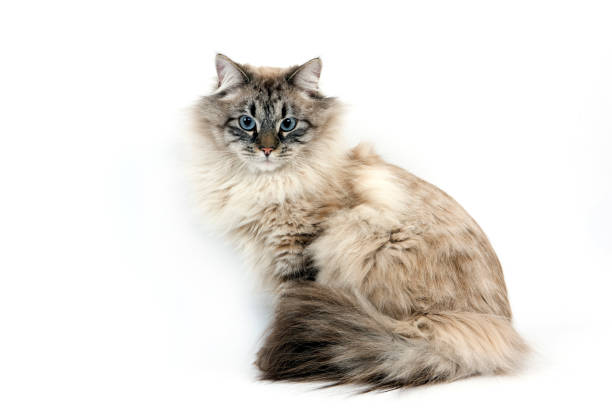

The Siberian cat is a centuries-old landrace (natural variety) of domestic cat in Russia that has recently been developed into a formal breed, with standards established globally since the late 1980s. Since 2006, the breed has been recognized for registry and championship status by all major cat registries. Officially named the Siberian Forest Cat, it is commonly referred to simply as the Siberian or Siberian cat. Historically, it was sometimes called the Moscow Semi-Longhair or Russian Longhair. The colorpoint variant, known as the Neva Masquerade, is classified as a separate breed by some registries, including FIFe, WCF, and ACF. The Siberian developed from an ancient landrace in Siberia and is considered the national cat of Russia. While it began as a natural variety, Siberians are now selectively bred and pedigreed within all major cat fancier and breeder organizations, ensuring that all Siberian cats are purebred with formally registered ancestry. This medium to large-sized breed is muscular and features a bushy tail. Siberians are often described as hypoallergenic due to their lower production of Fel d 1, a protein that is a common allergen found in cat saliva. A study of Siberian cats native to the breed's area of origin confirmed that they produce less Fel d 1 compared to non-Siberian cats, making them a potential option for allergy sufferers.

The Siberian cat, a large and fluffy breed, has a rich history rooted in Russia. These cats are believed to be one of the oldest domestic cat breeds, with origins that date back over a thousand years. They were likely brought to Russia by traders and settlers, adapting to the harsh climates of Siberia. Siberians are known for their resilience and natural hunting abilities, often serving as farm cats. They were cherished for their companionship and ability to control rodent populations. The breed gained popularity in Russia and eventually made its way to Western countries in the 1990s, where they became known for their playful and friendly nature. The Siberian cat is genetically related to another cat breed called Norweigian Forest.

The Neva Masquerade was developed in the late 20th century in Russia as breeders sought to create a color-pointed variant of the Siberian cat. The process involved selective breeding, where breeders paired Siberian cats with color-pointed breeds like the Siamese to introduce the distinctive color-point pattern while maintaining the Siberian's robust physique and thick fur. The breed was named after the Neva River in St. Petersburg, emphasizing its Russian origins. Initially, the focus was on creating cats with the characteristic points (darker colors on the ears, face, paws, and tail) while ensuring they retained the Siberian's friendly and sociable nature. Over time, the Neva Masquerade gained recognition and became appreciated for its beauty and affectionate temperament. Today, it's recognized as a distinct breed in many cat registries and continues to be popular among cat enthusiasts.